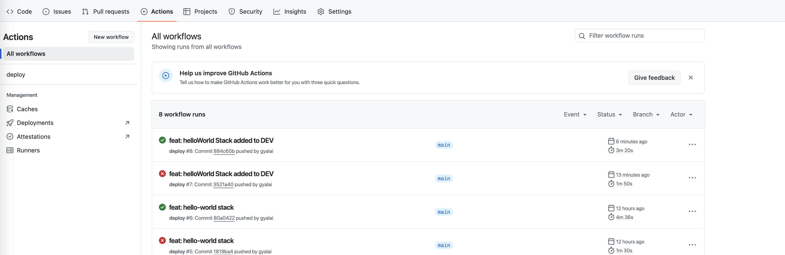
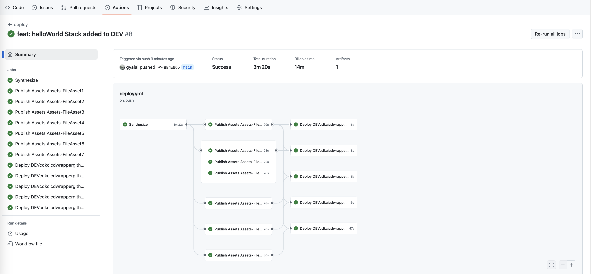
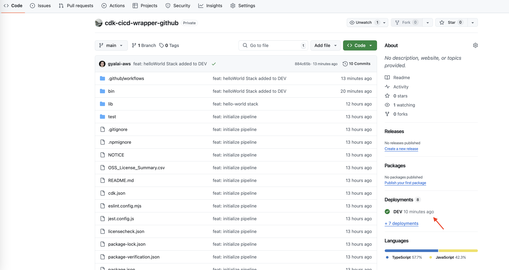
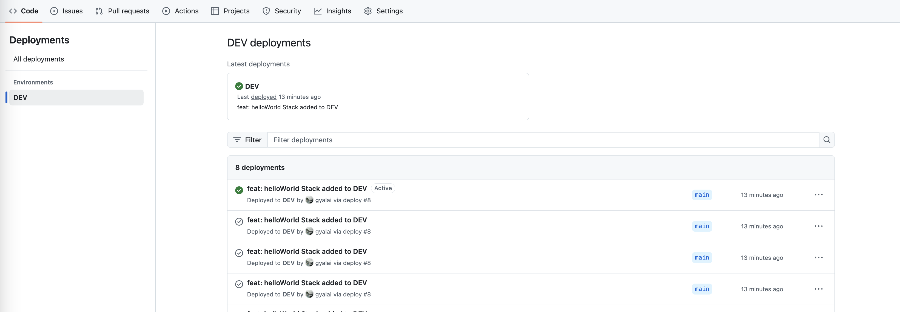

Deploy stack with CDK CI/CD Wrapper
In this section, we’ll deploy our infrastructure stack using the CDK CI/CD Wrapper integrated with GitHub Actions. This will guide you through the process of creating an AWS infrastructure stack, integrating it into the pipeline, and deploying it across stages. The stack we are deploying is designed to be flexible, modular, and ready for deployment in multiple AWS accounts.
You will:
- Create an infrastructure stack (HelloWorldStack) in your CDK project.
- Extend the CDK pipeline with a DEV stage for deployment.
- Add and manage the stack using the DefaultStackProvider.
- Deploy and observe the CI/CD pipeline using GitHub Actions.
By the end of this section, you’ll have a complete understanding of how to define, manage, and deploy infrastructure using the CDK CI/CD Wrapper, powered by GitHub Actions for continuous integration and deployment.
Create a Stack
Step 1: Create the Infrastructure Stack
We’ll begin by defining our demo stack.
- Create a file in
lib/hello-world-stack.tsand add the following content:
import * as lambda from 'aws-cdk-lib/aws-lambda';
import * as nag from 'cdk-nag';
import { Stack, StackProps } from 'aws-cdk-lib';
import { Construct } from 'constructs';
export class HelloWorldStack extends Stack {
constructor(scope: Construct, id: string, props?: StackProps) {
super(scope, id, props);
// Define the inline Python code
const inlinePythonCode = `
def handler(event, context):
return {
'statusCode': 200,
'body': 'Hello CDK CI/CD Wrapper'
}
`;
// Create the Lambda function
const pythonLambda = new lambda.Function(this, 'InlinePythonLambda', {
runtime: lambda.Runtime.PYTHON_3_12, // Specify the Python runtime
handler: 'index.handler', // Define the handler method
code: lambda.Code.fromInline(inlinePythonCode), // Inline Python code
});
nag.NagSuppressions.addResourceSuppressions(
pythonLambda,
[
{
id: 'AwsSolutions-IAM4',
reason: 'AWSLambdaBasicExecutionRole managed policy is used.',
},
],
true,
);
}
}
Congratulations! You’ve successfully created the infrastructure definition.
Step 2: Extend the Pipeline with a DEV Stage
- Open the
bin/cdk-cicd-wrapper-github.tsfile and modify the pipeline to add a DEV stage. - Replace the
.defineStagesblock with the following:- Replace
<your AWS account id>with your actual AWS account ID.
- Replace
.defineStages([
{ stage: wrapper.Stage.RES, account: '<your AWS account>' },
{ stage: wrapper.Stage.DEV, account: '<your AWS account>' },
])
Well done! You’ve extended the pipeline to include a DEV stage.
Update the Pipeline to Include the HelloWorldStack
This time, we will use the DefaultStackProvider class, which helps maintain cleaner and more manageable code.
Step 3: Create the HelloWorldProvider Class
We’ll begin by creating a bin/hello-world-provider.ts file that will use the DefaultStackProvider class to provide the HelloWorldStack.
- Create a file named
bin/hello-world-provider.ts. - Add the following content to the file:
import * as wrapper from '@cdklabs/cdk-cicd-wrapper';
import { HelloWorldStack } from '../lib/hello-world-stack';
export class HelloWorldProvider extends wrapper.DefaultStackProvider {
stacks(): void {
new HelloWorldStack(this.scope, 'HelloWorldStack', { env: this.env });
}
}
Congratulations! You’ve successfully created the
HelloWorldProviderclass to manage the deployment of theHelloWorldStack.
Step 4: Add the HelloWorldProvider to the Pipeline
Next, we will modify the bin/cdk-cicd-wrapper-github.ts file to include the HelloWorldProvider.
- Open the
bin/cdk-cicd-wrapper-github.tsfile. -
Add the following line to include the HelloWorldProvider class:
3. Import the.addStack(new HelloWorldProvider())HelloWorldProviderclass at the top of the file:import { HelloWorldProvider } from './hello-world-provider';
Great work! You’ve successfully updated the pipeline to include the DemoProvider class.
Show Solution
The bin/cdk-cicd-wrapper-github.ts file should look like this:
#!/usr/bin/env node
import 'source-map-support/register';
import * as cdk from 'aws-cdk-lib';
import * as wrapper from '@cdklabs/cdk-cicd-wrapper';
import { HelloWorldProvider } from './hello-world-provider';
const app = new cdk.App();
wrapper.PipelineBlueprint.builder()
.region('eu-central-1')
.defineStages([
{ stage: wrapper.Stage.RES, account: '<your AWS account id>' },
{ stage: wrapper.Stage.DEV, account: '<your AWS account id>' },
])
.plugin(new wrapper.GitHubPipelinePlugin({
repositoryName: '<your GitHub repository>',
}))
.addStack(new HelloWorldProvider())
.synth(app);
Step 5: Update the pipeline
Since we’ve defined a new stage (DEV) and introduced new AWS CDK stacks, it's essential to update the GitHub Actions pipeline to ensure that the new stack is correctly included in the deployment process. This allows the new HelloWorldStack to be synthesized and deployed across the pipeline stages. Without updating, the pipeline would not recognize the new infrastructure changes.
-
Run the following command to deploy the new stage:
npm run cdk deploy -- --all
Great! The DEV stage has been successfully deployed.
Commit the changes
Step 6: Commit and Push the Changes
-
Run the following commands to validate and commit the changes:
git add . git commit -m "feat: helloWorld Stack added to DEV" git push
Congratulations! You’ve successfully committed your changes and pushed them to the repository.
Observe the Pipeline
After pushing the changes to the repository, it's important to observe the progress of the pipeline in GitHub Actions to ensure everything is working as expected.
Step 7: Access GitHub Actions
-
Navigate to your GitHub repository.
-
Click on the Actions tab at the top of the repository page. This lists the executed workflows.

Step 8: View Workflow Pipeline
-
Click on the
feat: helloWorld Stack added to DEVworkflow to open its details. -
Step 8: View Workflow Pipeline

Step 9: GitHub Environments
The CDK CI/CD Wrapper integrates seamlessly with GitHub’s Environment feature, allowing you to track and manage deployments to different stages (such as DEV, INT, and PROD) directly from your GitHub repository.
Your environments and their latest deployments are listed in the sidebar of your GitHub repository.
Your environments and latests deployments are listed on side bar of your repository.
- Navigate to your GitHub repository.

- Click on the DEV environment to review the deployment history and applied changes for this stage.

Step 10: Verify the Deployed Stack in AWS CloudFormation
-
Open your AWS account used for the DEV stage.
-
In the AWS Management Console, navigate to CloudFormation.
-
You will see that the HelloWorldStack has been successfully deployed to your account.

You've deployed the HelloWorldStack with the CDK CI/CD Wrapper
Click Next to continue to the next section.